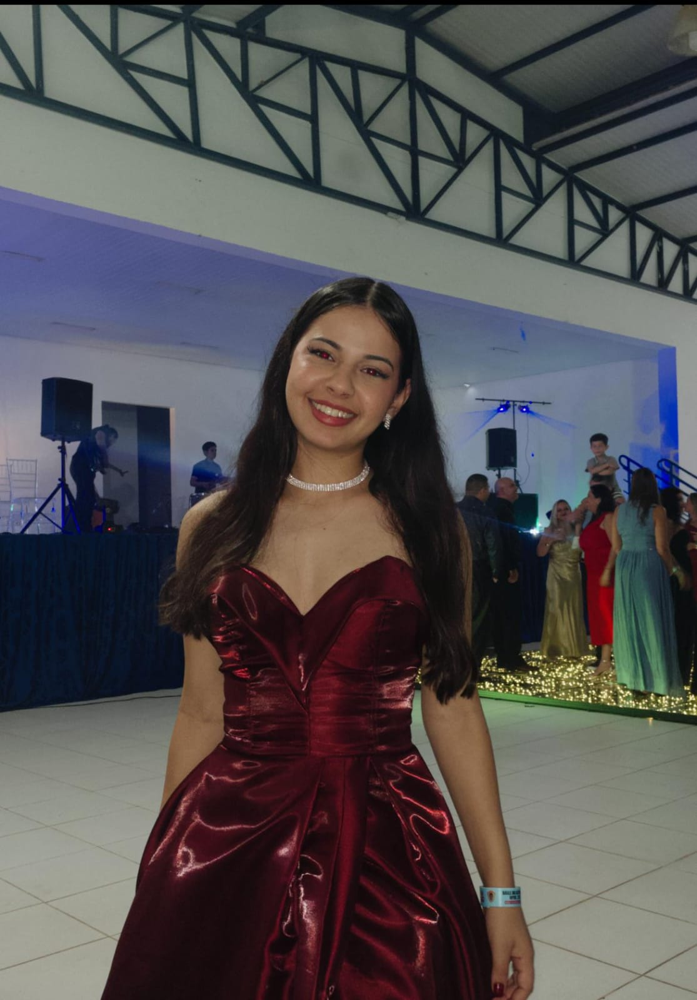
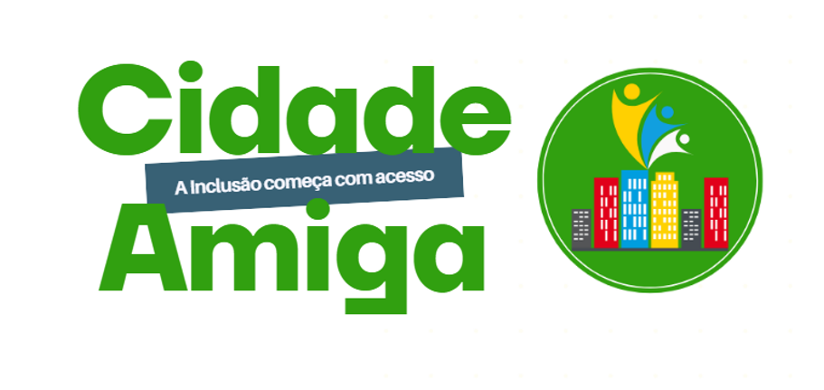
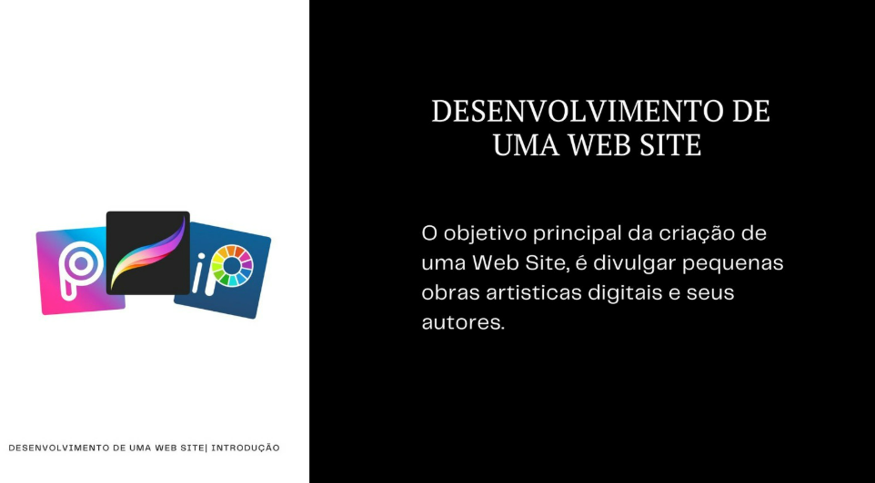
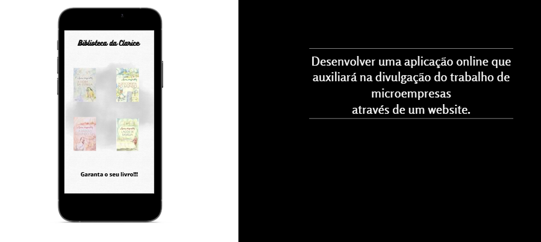

Estudante de Ciência da Computação
4º período — Afya São Lucas

E-mail:
ggoncalvesabati@gmail.com
LinkedIn:
Meu Perfil
Sou estudante de Ciência da Computação no 4º período da Afya São Lucas, interessada em tecnologia, desenvolvimento de sistemas e criação de soluções que possam gerar impacto positivo na sociedade.
Durante minha formação acadêmica, participei de projetos voltados à acessibilidade, divulgação de pequenos negócios e valorização de artistas. Essas experiências contribuíram para o desenvolvimento das minhas habilidades técnicas, criativas e de trabalho em equipe.
| Categoria | Tecnologias | Nível |
|---|---|---|
| Desenvolvimento Web | HTML5, CSS | Iniciante / Intermediário |
| Linguagens de Programação | C#, Python | Iniciante / Intermediário |
| Banco de Dados | SQL | Iniciante / Intermediário |
| Engenharia de Software | Visual Paradigm, Figma | Iniciante / Intermediário |

Projeto de acessibilidade desenvolvido com o objetivo de criar soluções que facilitassem o acesso de pessoas com deficiência. O projeto foi desenvolvido para o desafio Liga Jovem e avançou até a fase regional da competição.

Projeto voltado à criação de uma solução digital para auxiliar pequenos artistas na divulgação de seus trabalhos e ampliar sua visibilidade por meio da tecnologia.

Desenvolvimento de uma aplicação online para auxiliar na divulgação do trabalho de microempresas através de um website, oferecendo uma forma de ampliar sua presença no ambiente digital.